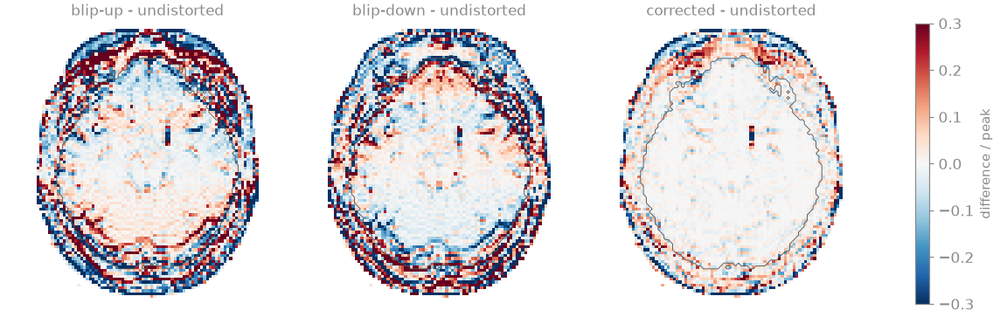

Note
Go to the end to download the full example code.
Susceptibility distortion in EPI#
In an echo-planar image, the phase-encoding direction is sampled at the echo spacing rather than the dwell time, so its bandwidth per pixel is a few tens of hertz. A spin off resonance by \(\Delta f\) is displaced along the phase-encoding axis by \(\Delta f\) divided by that bandwidth, which near the frontal sinus and the petrous bone amounts to several voxels at 3 T: the orbitofrontal cortex is compressed or stretched, and signal piles up where neighbouring voxels are displaced onto the same location.
The displacement changes sign with the direction in which k-space is
traversed. Two acquisitions with opposite phase-encoding polarity,
blip-up and blip-down, are distorted in opposite directions, and the
displacement field that brings them into register is the correction
[1]. This example simulates such a pair of a head at 3 T in a
\(B_0\) field computed from the magnetic susceptibility of the head, and
corrects it with bartorch.tools.correct_susceptibility(), which runs
PyHySCO [2].
Learning objectives
Compute the displacement of an EPI voxel from its off-resonance frequency, the echo spacing and the number of phase-encoding lines.
Recognise the compression, stretching and signal pile-up of susceptibility distortion, and their reversal between the two phase-encoding polarities.
Estimate the displacement field from a reversed phase-encoding pair and correct both images, including their intensity.
Assess the estimated displacement against the field map it originates from.
import torch
import bartorch
import bartorch.tools as bt
Object and field map#
The object is a slab of eleven axial slices of the BrainWeb T2-weighted head [3], 3 mm apart, through the orbitofrontal cortex and the temporal lobes, on a 96 x 96 matrix over a 220 mm field of view (2.3 mm in-plane). T2 weighting stands in for the \(b = 0\) image of a diffusion acquisition. The field map is the \(B_0\) offset at 3 T produced by the susceptibility difference between air and tissue, \(\Delta\chi = 9.4\) ppm, computed in 3D with the dipole kernel and less a second-order shim fitted over the brain, rounded to 1 Hz and limited to \(\pm 150\) Hz.
SIZE, FOV_MM, SLICE_MM = 96, 220.0, 3.0
VOXEL_MM = (SLICE_MM, FOV_MM / SIZE, FOV_MM / SIZE)
print(f"slab {tuple(image.shape)}, voxel {VOXEL_MM[1]:.1f} x {VOXEL_MM[2]:.1f} x {SLICE_MM} mm")
for name, region in (("head", head), ("brain", brain)):
values = field_map[region]
print(f"field over the {name}: {float(values.min()):+.0f} to {float(values.max()):+.0f} Hz")
slab (11, 96, 96), voxel 2.3 x 2.3 x 3.0 mm
field over the head: -150 to +150 Hz
field over the brain: -67 to +59 Hz
Displacement along the phase-encoding axis#
The phase-encoding axis is anterior-posterior and the readout is left-right. With \(N\) phase-encoding lines acquired at echo spacing \(\Delta t_{esp}\), line \(n\) is sampled at \(t_n = n\, \Delta t_{esp}\) relative to the echo time, with \(k_y = n\) in grid units from \(-N/2\) to \(N/2 - 1\). The phase accrued off resonance, \(2\pi \Delta f\, t_n\), is then linear in \(k_y\), which is a displacement by
with \(\mathrm{BW}_{PE}\) the bandwidth per pixel along the phase-encoding axis. Reversing the phase-encoding blips traverses \(k_y\) in the opposite order, \(t_n = -n\, \Delta t_{esp}\), and reverses the displacement. The readout, sampled at a dwell time of a few microseconds, has a bandwidth per pixel over a kilohertz and its displacement is neglected. An echo spacing of 0.6 ms without parallel imaging is typical of a single-shot diffusion acquisition at this resolution.
ECHO_SPACING_S = 0.6e-3
bandwidth_pe = 1 / (SIZE * ECHO_SPACING_S)
displacement_mm = field_map / bandwidth_pe * VOXEL_MM[1]
print(f"bandwidth per pixel along phase encoding: {bandwidth_pe:.1f} Hz")
print(
f"displacement over the brain: {float(displacement_mm[brain].min()):+.1f} to "
f"{float(displacement_mm[brain].max()):+.1f} mm"
)
bandwidth per pixel along phase encoding: 17.4 Hz
displacement over the brain: -8.8 to +7.8 mm
The acquisition#
Each column of each slice is simulated exactly for the field map: the
phase-encoding line \(n\) is the Fourier sum over the column,
\(s_n = \sum_y x(y)\, e^{-2\pi i k_n y / N}\, e^{2\pi i \Delta f(y)\,
t_n}\), and the image is its inverse transform along the phase-encoding axis
with bartorch.ifft(). The blip-up image is the one acquired with
\(t_n = -n\, \Delta t_{esp}\), whose voxels are displaced by
\(+d\), towards posterior for a positive offset.
k_y = torch.arange(SIZE, dtype=torch.float64) - SIZE // 2
encoding = torch.exp(-2j * torch.pi * torch.outer(k_y, k_y) / SIZE) / SIZE**0.5 # (n, y)
def acquire(polarity):
line_time = polarity * k_y * ECHO_SPACING_S
accrued = torch.polar(
torch.ones((), dtype=torch.float64),
2 * torch.pi * line_time[:, None, None, None] * field_map.double(),
)
lines = torch.einsum("ny,nzyx,zyx->znx", encoding, accrued, image.to(torch.complex128))
return bartorch.ifft(lines.to(torch.complex64), axes=1, unitary=True).abs()
blip_up, blip_down = acquire(-1), acquire(+1)
Correction from the reversed pair#
PyHySCO estimates the displacement field \(b\) for which the blip-up
image sampled at \(y + b\) and the blip-down image sampled at
\(y - b\), each multiplied by the Jacobian determinant of its
transformation, agree. The Jacobian factor restores the intensity of voxels
compressed into a pile-up or stretched over several voxels. A smoothness
penalty on \(b\) and a constraint that keeps both transformations
invertible regularize the problem; the estimation is three-dimensional, and
correct_susceptibility() takes the slab with its voxel
size and returns \(b\) in millimetres.
Results#
Each image is compared with the undistorted object as the normalized root-mean-square error (NRMSE) over the brain; the estimated displacement is compared with \(d\) over the brain.
def nrmse(estimate, truth, region=brain):
return float((estimate - truth)[region].norm() / truth[region].norm())
print(f"blip-up NRMSE {nrmse(blip_up, image):.3f}")
print(f"blip-down NRMSE {nrmse(blip_down, image):.3f}")
print(f"mean of the pair NRMSE {nrmse(0.5 * (blip_up + blip_down), image):.3f}")
print(f"corrected NRMSE {nrmse(corrected, image):.3f}")
error_mm = (estimated_mm - displacement_mm)[brain]
print(
f"displacement over the brain: RMS {float(displacement_mm[brain].square().mean().sqrt()):.1f}"
f" mm, RMS error of the estimate {float(error_mm.square().mean().sqrt()):.1f} mm"
)
blip-up NRMSE 0.251
blip-down NRMSE 0.242
mean of the pair NRMSE 0.170
corrected NRMSE 0.080
displacement over the brain: RMS 1.8 mm, RMS error of the estimate 0.8 mm



Where the offset is positive – the scalp and the fat anterior to the frontal lobes, and the orbitofrontal cortex – the blip-up image displaces signal towards posterior and the blip-down image towards anterior; in the lateral temporal lobes, where it is negative, the directions are exchanged. Where the displacement decreases along its own direction, neighbouring voxels converge onto one location and form a bright pile-up, as the frontal scalp does in the blip-up image; where it increases, their signal is stretched over more voxels and darkened. The mean of the pair superimposes both distortions. The corrected image restores the position and the intensity of the cortex. Its residual is largest in the scalp, where the displacement reaches several voxels and changes within a few, and where a pile-up has summed the signal of separate voxels into one, which no transformation of the pair separates.
The estimate of \(b\) follows \(d\) over the brain; it is smoother, as the regularization requires, and has no information where the images carry no signal. In practice the pair is acquired as two short \(b = 0\) series, the displacement field is estimated once, and it is applied to every diffusion-weighted volume acquired with one of the two polarities.
References#
Total running time of the script: (0 minutes 2.511 seconds)